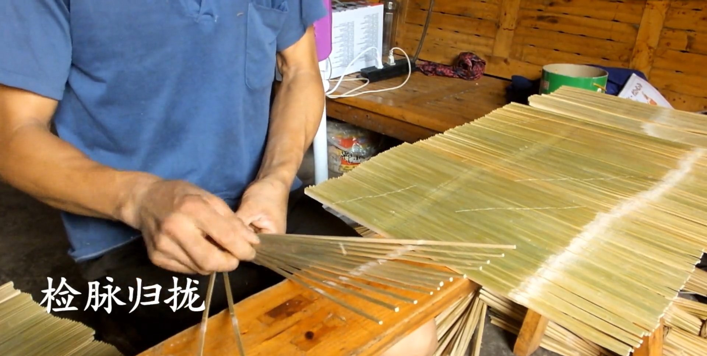
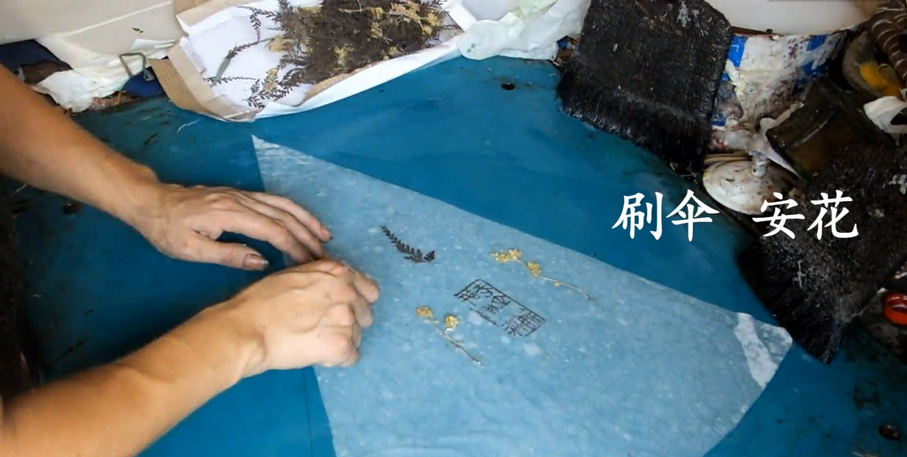
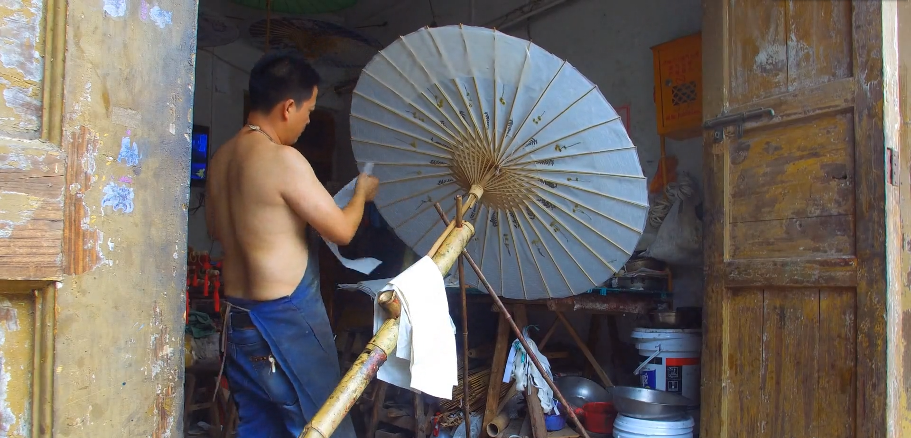

分水油纸伞
备料
制作骨架
制伞面
渡伞装饰
备料
选竹
材楠生五主
料竹长年要
的以地以部
柔保向上件
韧证阳并材
性原的且料
处理
制伞骨架
选竹
伞较虽但精各符在了完伞架
骨复然也确个合整开整骨和
架杂是体的部力体合的架伞
的较纯现标件学上自系是骨
制耗手出准组原形如统由组
做时工了化合理成的 伞成
处理竹条
上伞骨



制伞面
网伞
雨的子每的上
伞基调跟距五
初础整批离圈
步通和子并棉
成过固之且线
形折定间网
伞面材料早期为纯手工制作的皮纸
后由于掌握制作的皮纸技艺的手工艺人相继去世
当代油纸伞面的材料
已全部用机器生产的绵纸代替

糊伞
通过调胶湿伞糊伞贴皮纸晾伞烤伞等工序把湿透的扇形伞面糊在雨伞批子上拼贴成一整张每一层纸之间都要预留供热胀冷缩的空间面积也要大致相同以保证伞面干后不开裂

静置一两天后
上桐油


镀伞装饰
穿伞
五色丝线按照一定的先后顺序通过不同的编织手法穿渡在批子和衬子预留的小孔间